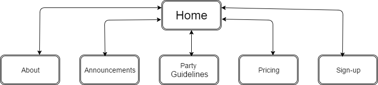

Name:Nayan Mhaske
Login:
JC342215
Password1
The goal of the website is to increase online presence of CossiePlay and increase revenue by attaracting younger audience through the website.
The website will feature their designs and pricing for costumes for different audience depending on age group. Also, the aim is to attract more customers through new updates about parties.
Success of the website will be evaluated based oon following factors:
Purpose: The website satisfies the need of business i.e to establish presence online so that the owners can reach out to wider audience ase. Having images that can attract customers of different age group will help in sucess of this website.
Clarity: The design of website is quite simple to understand and clear images convey to ccustomers what the website is intended to sell.
Usability: The website is very simple to use and understand. Navigation is clear and highlighted which makes it easy for user to navigate through website. Also, the fonts used are big enough to be easliy readable.
Accessibility: The webiste functions well with all browsers and on mobiles. Menu is automatically toggled to adjust to screen size without taking up too much space.
User-Focus: User-Focus is maintained throughout the webiste keeping in mind users of different age group.
Navigation: Simple and visible top-navigation helps users to find content easily. Also, relevant links are added where necessary in content to direct users to specific pages.
Appearance: The website will be designed as per latest trends in technology and will have fluid design i.e. one design can fit in all screen sizes.
The sucess of this website will depend on all above factor resulting in increased revenue.
Target audience of this webiste are users from high school and young adults i.e. users above 12 years of age. As the owner already have users between 35-50 the website is intented for young users.
